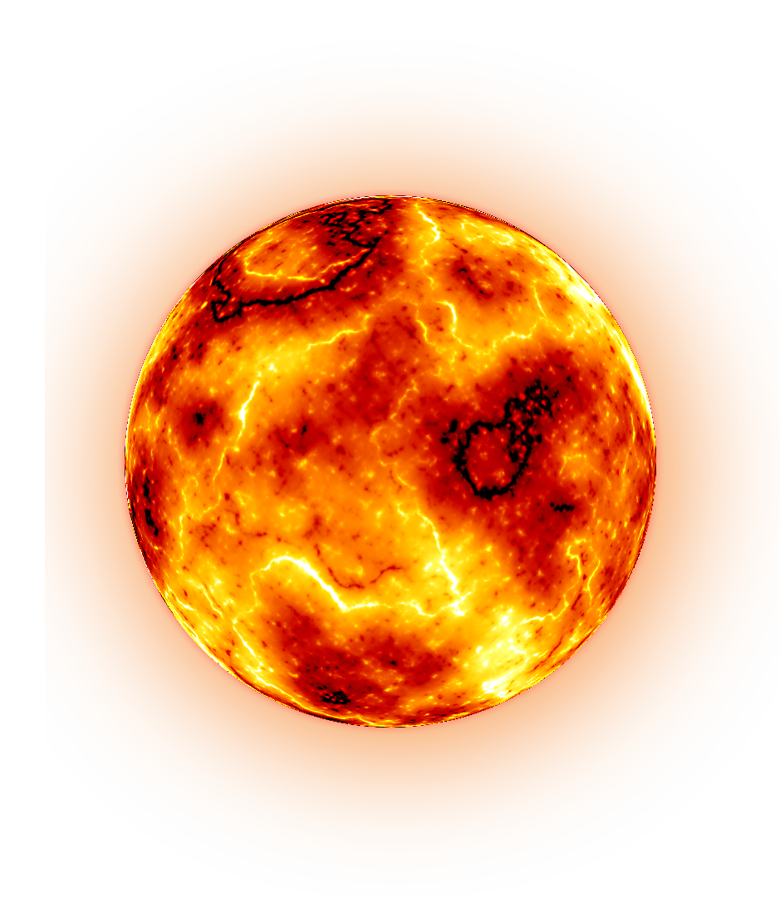
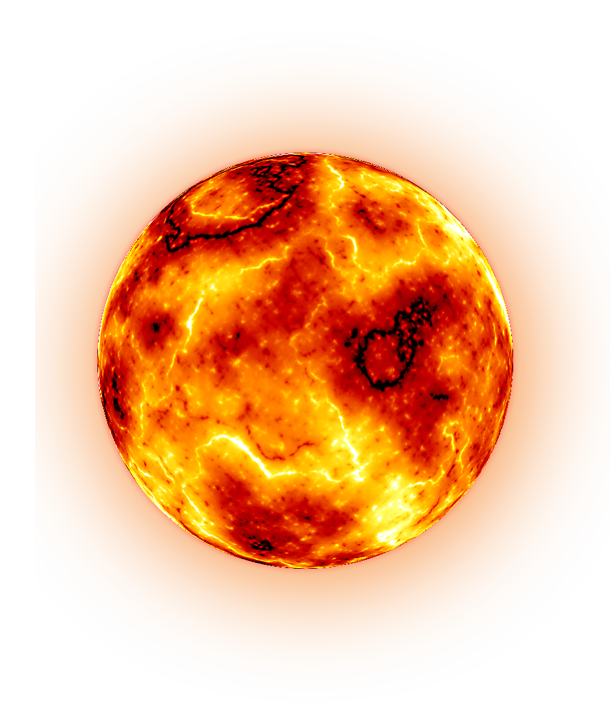

SUN
โครงสร้างภายในของดวงอาทิตย์
-แก่นปฏิกรณ์นิวเคลียร์ (Fusion core) อยู่ที่ใจกลางของดวงอาทิตย์ถึงระยะ 25% ของรัศมี จุดปฏิกิริยานิวเคลียร์ฟิวชันหลอมอะตอมของไฮโดรเจนให้กลายเป็นฮีเลียม และปลดปล่อยพลังงานออกมา
-โซนการแผ่รังสี (Radiative zone) อยู่ที่ระยะ 25 - 70% ของรัศมี พลังงานที่เกิดขึ้นจากแก่นปฏิกรณ์นิวเคลียร์ถูกนำขึ้นสู่ชั้นบนโดยการแผ่รังสีด้วยอนุภาคโฟตอน
-โซนการพาความร้อน (Convection zone) อยู่ที่ระยะ 70 - 100% ของรัศมี พลังงานที่เกิดขึ้นไม่สามารถแผ่สู่อวกาศได้โดยตรง พลังงานจากภายในจึงถูกพาออกสู่พื้นผิวด้วยการหมุนวนของแก๊สร้อน
 
